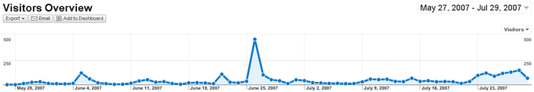

July 29th, 2007
The original camera battery that came with my Canon Digital Rebel was starting to lose the ability to hold a full charge. I tried to squeeze every last drop out of the battery by constantly taking it out of the camera and holding it in my hand but even after this desperate measure it still would only last for about 20 minutes. So the first place I turned to find a new battery was eBay which has a wide range of BP-511 generic batteries to choose from. The prices were so good I ended up winning an auction for two batteries at the final price of $15.00, including shipping. Normally a single original Canon battery would go for $35.00 but I was willing to take the risk of going with a generic.
After a couple weeks of testing, the batteries are working great. They hold a charge for many photo sessions now and I can focus on taking more shots instead of worrying about how much juice I have left. Everything was great until I got to the point where I needed to take it out of my camera. The Digital Rebel has an orange latch that holds the battery snug and in place. When I would release the latch with the old battery, it would pop right up so I could grab hold of it and lift it out. These generic batteries are heavier than the original so when I released the latch the battery just sat there like a rock. It took me 15 minutes and a bobby pin to pry the thing out of my camera. This would not do if I were out shooting so I devised a quick fix.
Using regular scotch tape, I stretched out a piece and folded over the top of the tape back onto itself to make a firm loop. Next, I proceeded to cut the strip of tape in half vertically so I had two, long skinny strips with loops on the end. With the battery warning sticker as a guide, I pressed the two pieces of tape firmly in the groove leaving the loops hanging over the edge of the top of the battery. What I have left with is this…

Now I can easily hoist my batteries out of the camera turning a former deal-breaker trait into only a slight inconvenience. It still takes a little fiddling to pull the battery out but at least I don’t need to wiggle a bobby pin around the battery compartment. And the best part is they don’t get in the way of charging or using the battery. These knock-offs are totally worth the initial risk of going generic.
Posted at 10:56 pm in Photo, Reviews | 2 Comments »
July 29th, 2007
My first post was posted on May 27th, which means I have been keeping up this blog for two months. All of my other personal blogs would have been long dead by this time, as most blogs probably end up. I think it is because I spent a lot of time setting up my own look and learning the inner workings of WordPress, which is a lot of fun.
In my first post I said I would try to post at least two posts a week. I have gone far above that rate averaging about 11 posts a week or 1.57 posts a day. Maybe I underestimated my blogging ability. Here are some other stats for those interested in the behind the scenes of my blog:
Most Popular Post: Russell Heimlich Simpsons Style
Page Views: 917
I have no idea why this particular post became so popular but the traffic is coming from DownloadSquad.com where I posted a comment to their Create Yourself as a Simpsons Character post.
Second Most Popular Post: Operator 11: The Best Live Video Web Application
Page Views: 720
I got linked to by Robert Scoble and he gave me some traffic that day. If you want more traffic to your blog just linkbait an A-list blogger.
Total Pageviews: 5,021

From here on out there are two small changes to the individual post pages. At the bottom of the entry there are links to related posts and recent posts. Hopefully this will increase some awareness of my older posts buried deep in my archive. There is also a single ad next to the links since most of my traffic comes from people being linked directly to an article and not my main blog page. If you read this blog regularly, you will hardly notice a difference.
Posted at 6:59 pm in Random Musings | No Comments »
July 28th, 2007

The Simpsons Movie manages to stay true to its television roots with off the wall hi-jinks and a familiar cast from everyone’s favorite fictional town. With 18 seasons under its belt, it would be a challenge to find someone who has not seen a single episode of the cartoon family. In fact, the main draw of this movie is the fact that it is, well, The Simpsons but 3x longer. Come to think of it, the trailer and TV commercials had nothing to do with the plot but captured the slapstick Simpsons-esque humor.
As I entered the theater I had no idea what was going to take place during the hour and a half running time but that didn’t really matter. In true Simpsons style, the story is set-up quickly through a series of random and seemingly unconnected events. Throughout the film the characters poke fun at everything from the government to the FOX network and even the idea that they are making a movie with the same stuff everyone has been enjoying for free on tv for the past 18 years.

Going from the TV screen to the silver screen did change a few things. For one thing, the movie is a bit edgier with some sort-of kind-of nudity, slightly harsher language, and a little more violence than you would normally see on the network TV version. But those things are what make the movie a movie, the freedom to push the content further with greater freedom of expression. The look also departed from the typical 2D animation to a more 2.5D cinematic cartoon. At first this look was a bit uncomfortable, but it grew on me through out the movie.
The bottom line is if you have ever been a fan of The Simpsons you will definitely want to see the movie. Those who don’t really like or understand The Simpsons are better off just skipping it since it captures the same aspects that everyone has come to love from the TV show. Besides, if you are not a big Simpsons fan then you will miss a lot of the inside jokes that make it that much funnier. If you do go, sit through the credits as there are a few extra little scenes sprinkled throughout.
I give the Simpsons Movie two thumbs up, 5/5 stars, 10/10, whatever the rating system is mostly because I am a big fan of the Simpsons in general. The film kept me laughing and managed to avoid being a half-assed theatrical port of a great television series.
Posted at 1:53 am in Movies, Reviews | 1 Comment »
July 27th, 2007

Gas or a typical frat party?
Posted at 4:46 am in Photo, Random Musings | No Comments »
July 26th, 2007
Tonight Kristina and I went to a Bladensburg 7-11 which is one of a select few that have been converted into a Kwik-E-Mart. It was fun seeing the popular fictional brands as live products such as Buzz Cola and Squishees. The Simpsons convenience store facade was a big hit as there were people coming in taking pictures the whole time we were there. I managed to take a couple picture myself.


See the rest of the gallery
Other highlights of the trip included randomly seeing an old friend from college who happened to stop by the store after work and getting a banana Squishee. We also stocked up on Krusty-Os and Buzz Cola for later treats. Yummm! If you want to see a Kwik-E-Mart store near you then you better hurry because as of Saturday, July 28th, all of the stores wil revert back to plain old 7-11s.
I have tickets to see The Simpsons Movie tomorrow night after work and afterwards I will post my review for Simpsons Extravaganza Pt.2.
Posted at 11:46 pm in Photo, Random Musings, Reviews | No Comments »
July 25th, 2007

See all this money? It’s $207 million in cash and was hidden in the walls of a luxurious, Mexico City home belonging to Zhenli Ye Gon. Gon ran a pharmaceuticals company that allegedly was a front to provide Mexican drug cartels with lots of chemicals to make methamphetamine. His house was busted in March but Gon had fled.
This past Monday, U.S. Drug Enforcement Agents apprehended Zhenli at the mall just down the street from my apartment.
At P.J. Rice Bistro, where he and a female acquaintance ordered codfish and baby carrots, DEA agents showed up before dinner was served. “The police came to the table and asked him to go pretty fast,” a bistro employee recalled yesterday. “They didn’t stay in the restaurant too long.”
Apparently Wheaton, Maryland, is a great place to lay low. It is a fairly diverse place. Check out the map.

(via WashingtonPost)
Posted at 10:24 pm in Local, Random Musings | No Comments »
July 24th, 2007
I was signing up to Wikipedia.org so I could contribute to the knowledge when I get this CAPTCHA…

Hmmm…
By the way, did you know CAPTCHA stands for “Completely Automated Public Turing test to tell Computers and Humans Apart.” You can read more about CAPTCHAs on Wikipedia or listen to a great podcast on Security Now Episode #101.
Posted at 11:14 pm in Random Musings | 6 Comments »
July 24th, 2007

Everyone likes to look at pretty things, designers just get a little more involved. There are a host of design inspiration sites out there but Faveup.com divys their content up into logos, business cards, flash websites, and CSS websites; something for everyone. I love browsing through creative offerings and this site keeps my imagination going in the online side and the print side of things.
Posted at 9:36 pm in CSS/HTML, Inspiration, Web | No Comments »
July 23rd, 2007

What was meant to be a quick weekend project turned into a month-long undertaking. TXT2LOL.com, is my pet project for converting regular speak to the grammatically incorrect and misspelled LOL. LOL became popular thanks to cat macros, or LOL cats, and I wanted an easy way to create authentic-sounding LOL captions. Think I’m going a bit overboard? Anil Dash from SixApart.com did an in-depth analysis of the LOL grammar.
At any rate, I just made a tool that hopes to make peoples lives a little bit easier so they can make many others smile with their ridiculous LOL captions.
Please take a look at the site and let me know of any translations I missed by using the ‘Submit a Word’ link.
Posted at 10:52 pm in Internet, TXT2LOL, Web | 2 Comments »
July 23rd, 2007
And is no longer shaggy on top. What do you think?
P.S. Don’t you love my shower curtain?
Posted at 8:00 pm in Mobile Post | 2 Comments »